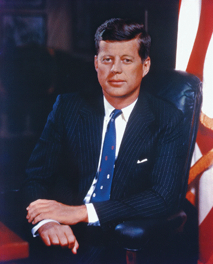

Favorite
-
Jonh.F.Kennedy
-
Elon_musk
-
Steve_jobs

"We choose to go to the moon"
John Fitzgerald Kennedy (May 29, 1917_November 22, 1963),
often referred to by his initials JFK and by the nickname Jack,
was an American politician who served as the 35th president
of the United States from 1961 until his assassination in 1963.
He was the youngest person to assume the presidency by election
and the youngest president at the end of his tenure.

"We've done it?"
Elon Reeve Musk is a business magnate and investor. Musk is the founder,
chairman, CEO and chief technology officer of SpaceX; angel investor, CEO,
product architect and former chairman of Tesla, Inc.; owner, chairman and CTO of X Corp.;
founder of the Boring Company; co-founder of Neuralink and OpenAI; and president of the
Musk Foundation. He is the wealthiest person in the world, with an estimated net worth of
US$226 billion as of September 2023, according to the Bloomberg Billionaires Index,
and $249 billion according to Forbes, primarily from his ownership stakes in both Tesla and SpaceX.

"They never give up"
Steven Paul Jobs was an American business magnate, inventor, and investor.
He was the co-founder, chairman, and CEO of Apple; the chairman and majority
shareholder of Pixar; a member of The Walt Disney Company's board of directors
following its acquisition of Pixar; and the founder, chairman, and CEO of NeXT.
He was a pioneer of the personal computer revolution of the 1970s and 1980s,
along with his early business partner and fellow Apple co-founder Steve Wozniak.